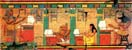

|  |
Egyptology Resources Bulletin Board |
Requests for information 2005-7 |
29 July 2006: Egyptian oil lamps
I am a student of Egyptology and am currently researching Egyptian Oil Lamps. There are around 20 oil lamps in the Western Australian Museum collection and I am endeavouring to find out more about them and Egyptian oil lamps in general. However, to date I have been unable to find any information on lamps in collections, published material or anyone with any knowledge of past or current research done in this area.
Any information on this topic would be greatly appreciated.
Christine Mair mair1@iinet.net.au
5 June 2006: Egypt stuff in the Philadelphia area
I work for the Greater Philadelphia Tourism Marketing Corp, which is compiling resources on all things Egyptian in Philadelphia and its Pennsylvania suburbs, timed to coincide with the King Tut exhibit coming here next year. I am looking for Philly history, architecture, dining, art, culture, etc... that is directly and measurably influenced by Egypt, whether it be modern or ancient.
Can anyone point me to anything (and quickly, my deadline is now!). Thank you.
Tara Nurin
GPTMC
Philadelphia, PA tourism@eyesontheworld.us
20 February 2006: New Kingdom information request
I am writing a fictional book and would appreciate the following information:- The currently "accepted" dates of the two robberies of King Tut's tomb in antiquity.
- The approximate date of the death of the Vizier Paser ( Vizier under both Seti I and Ramses II )
- Who were the most influential Viziers and/or advisors during Ramses II sixty-seven year reign ( chronologically)?
I would greatly appreciate some feedback!
Thanks
Leslie Drew lmdrew@rcn.com
27 January 2006: Cosmetics
I'm working in a thesis about cosmetics in Ancient Egypt and I would like to know if someone has information about the side effects of some of the materials used by Egyptians, in particular the toxicity of minerals such as realgar.Thanks in advance.
Vanda Raimundo
raimundovanda@yahoo.com
28 November 2005: Giza contour map
Is there is a "contour" map/plan available of the wider area around the Giza Plateau (online or other), i.e.not stopping at the Sphinx etc to the east, and not limiting itself just to the pyramids?
I would appreciate any information. Thanks in advance.
Neville Braybrook
nevillebraybrook@btopenworld.com
10 November 2005: Photos and excavations notes by Henri Henne
I am searching for the notes and possible photographs made during the 1921-1924 excavations at Tell Edfu (Upper Egypt) directed by Henri Henne, who was a Papyrologist at Lille/France. Thanks in advance.
Nadine Möller
nadine.moeller@free.fr
7 November 2005: Merenptah stela
I am trying to locate the an image of the Merenptah Israel stela for a book that I'm writing. Any assistance is greatly appreciated.
Jodell Onstott
execsuite@megagate.com
25 August 2005: TT33
For 4-5 years now I have been trying to find information, photographs or whatever is available about Theban Tomb 33, that of Petamenophis (Padi-amun-(em)-apet) a Chief Lector Priest of the 25th-26th Dynasty.
I do have some photos of statues found in his tomb, and have had help from the Bolton Museum, The British Museum and the Berlin Museum.
I know however that there was a red granite offering table and many smaller objects in his large and grandiose tomb, which alas is now inaccessible as it is used as a store by the Antiquities Department.
I should be grateful to anyone who can give me any information on this great man and his family. I know of his mother and sister, but for example nothing of his father.
This information is for personal research only.
Yours sincerely,
Allan Robertson
ARYESR@terra.es
23 June 2005: coffins repeat
Could the person who contacted me recently (June 2005) regarding MK coffins please get in touch again? Thank you.
Claire Gilmour
anubis@amduat.freeserve.co.uk OR Claire.Gilmour@gmail.com
4 May 2005: Language courses
My name is Michael Brumbaugh and I am beginning graduate study in Classics. I am interested in finding an intensive summer language course for ancient Egyptian – Coptic, demotic, middle Egyptian, old Egyptian, whatever. I cannot seem to find any information on summer sessions in these languages. I am in the US but would be interested in anything that is available in the US or abroad.
Thank you so much,
Michael Brumbaugh
MBrumbaugh@colgatealumni.org
Posts from 2004 will be found here
Posts from 2003 will be found here
Posts from 2002 will be found here
Posts from 2001 will be found here
Posts from 2000 will be found here
Posts from 1999 will be found here
Unless otherwise indicated, © Nigel Strudwick 1994-2016